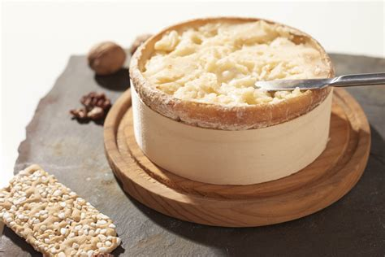
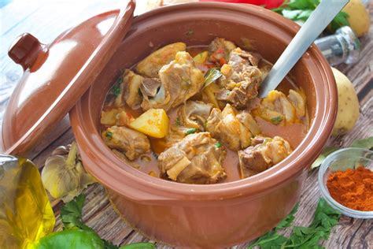
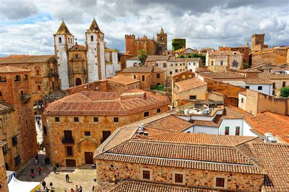
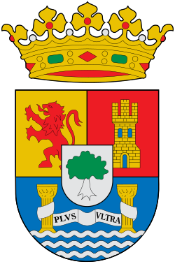

Extremadura
Descripción
Extremadura está en el oeste de España, cerca de Portugal. Es una región tranquila con muchos parques naturales, pueblos antiguos y monumentos romanos. Tiene una rica historia y muchas tradiciones rurales.
Datos Rápidos
- Capital: Mérida
- Idioma Regional: Español
- Población: ~1.05 millones
- Famosa por: Ruinas romanas, jamón ibérico, naturaleza
- Dato Curioso: ¡Mérida tiene uno de los teatros romanos mejor conservados del mundo!
Platos Populares
Migas Extremeñas

Jamón Ibérico

Torta del Casar

Caldereta de cordero

Lugares Famosos
Teatro Romano de Mérida

Monasterio de Guadalupe

Cáceres

Parque Nacional de Monfragüe

Mejor época para visitar
Es ideal visitar Extremadura en primavera (abril–junio) o otoño (septiembre–noviembre) cuando el clima es suave y hay muchas flores o colores otoñales.
Símbolos Regionales
- Bandera:
- Escudo: 